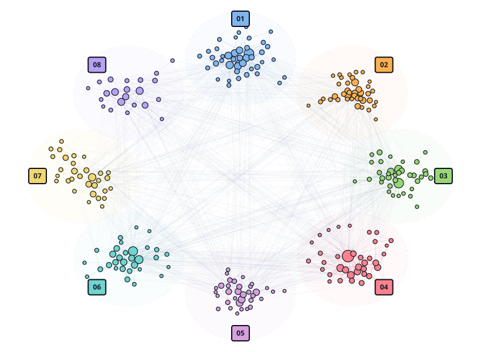
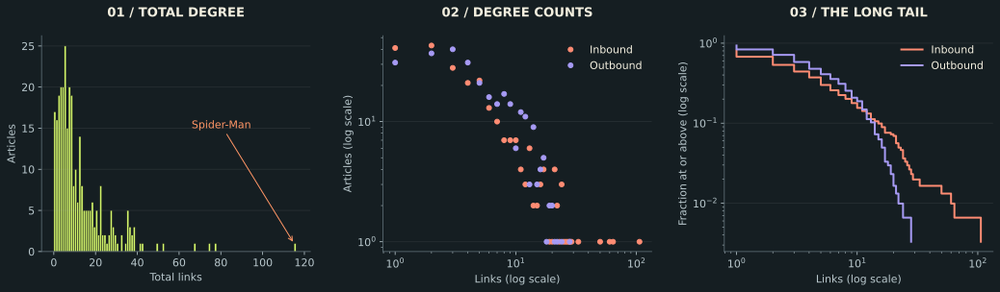

ISSUE 01 Social graphs & interactions
EVERY HERO.
EVERY LINK.
ONE STRANGE
UNIVERSE.
Some heroes get all the attention. Others live on islands. Follow the Wikipedia links holding the Marvel universe together—and find out what happens when they disappear.
 One giant component.
One giant component.A universe of smaller worlds.
Playable issue · Three shields. One snap.
Can you outsmart Thanos?
He announces ten targets. Scarlet Witch can shield three. Choose who survives, watch the snap, and keep the largest group of Wikipedia articles connected.
Play Outsmart Thanos ↗Three missions · Real network links · Animated characters · No sign-in
The surprise · links without a return
What if every reference
had to be returned?
The network looks connected because one-way links are enough to hold most pages together. But if we keep only relationships where both pages link to each other, isolates jump from 17 to 96.
All 303 articles stay in fixed positions. Coral lines are one-way links; cyan lines are mutual links. The bright nodes are articles that become isolated only after one-way links are removed.
Why this is not just random deletion
We compared the mutual-only graph with 500 random graphs that keep the same number of connected article pairs: 350 out of 1,434.
Every random sample had a larger largest component than the mutual-only graph. So the surprise is not simply that fewer links make the network smaller. The one-way links are doing special bridge work.
Bars show random trials; lime lines mark the observed mutual-only graph. This baseline preserves connection count, not each character's degree. Reproduce the analysis.
Why in-degree and out-degree split
The link balance
Every article has two signatures: who references it, and who it references. This chart shows why the top inbound and outbound characters are different people.
Both halves use 0-110 links. Zero means no links within this roster.
What we asked
Three questions
- 1. What shape is the degree distribution — how concentrated are the links?
- 2. In-degree vs out-degree: the most linked-to character and the most linked-from character are not the same person. Why?
- 3. The data page warns there are isolated nodes. Are the isolates the only thing outside the giant component?
Explore it
Explore the frozen network
Select an article to inspect its incoming and outgoing links. Switch between communities and components, or search for one of the 17 isolates. The layout is interactive; the underlying data is the frozen snapshot.
The figure
One network. Eight worlds.
277 hero articles form the largest connected group. Meet its eight communities. Open a panel to see what connects their worlds.
Eight worlds. One shared universe. Open a panel and follow the links.

Each panel contains real Wikipedia article links. Node area reflects total degree in the frozen roster. Louvain communities are calculated on the undirected giant component; the group names are interpretations, not verified teams. Layouts are illustrative. The nine-article island and 17 isolates are outside this view. Reproduce the roster.

| Most linked-to | in | out | Most linked-from | out | in |
|---|---|---|---|---|---|
| Spider-Man | 106 | 9 | Betsy Braddock | 28 | 7 |
| Hulk | 64 | 10 | Cloak and Dagger | 24 | 11 |
| Wolverine | 60 | 17 | Adam Warlock | 22 | 8 |
| Doctor Strange | 50 | 17 | Venom | 21 | 17 |
| Deadpool | 33 | 19 | She-Hulk | 20 | 29 |
What surprised us · the community that will not mix
The X-Men are a walled garden
Louvain locks onto the X-Men most cleanly not because they are a "team" but because, in the link structure, they are a closed clique — more than half of everything they reference is another X-Man. The street-level and Heroes-for-Hire clusters are the opposite: they barely hold together on their own and exist mostly by borrowing links from the rest of the roster. The walled-off X-Men pattern matches decades of editorially separate X-Men books; whether that is cause or coincidence, the graph alone cannot say.
Why in ≠ out
Being referenced and making references are different roles
Spider-Man receives links from 106 articles and links to nine. Betsy Braddock leads outbound degree with 28 links, but receives seven. These count distinct links between articles in this roster.
Recognition, article length, and editorial choices could help explain the difference, but this graph alone cannot separate them. Inbound degree does not directly measure fame, and outbound degree does not measure narrative complexity. The useful clue is reciprocity: only about 39% of directed edges have a reverse edge.
What surprised us
There is a second, hidden island
Beyond the 277-node giant component, there are 17 isolates and a nine-node island. No path joins this island to the giant, even when link direction is ignored.
The island contains Backhand, Blackthorn, Radian, Scaredycat, Scatterbrain, Shear, Snapdragon, Toxyn and Vyking. Loading only the edge list loses the 17 isolates, but keeps this island. That is why the node roster matters.
Stretch · Wikipedia API
Does the frozen snapshot match live Wikipedia?
The notebook stores an earlier API comparison for five articles
(action=parse&prop=wikitext, with a
User-Agent header to identify the client), scraped the
[[links]], kept the ones pointing at another of the 303,
and compared to the snapshot's out-edges (last section of
the notebook):
| character | snapshot | live wikitext | shared | snapshot-only | live-only |
|---|---|---|---|---|---|
| She-Hulk | 20 | 20 | 20 | 0 | 0 |
| Adam Warlock | 22 | 21 | 21 | 1 | 0 |
| Doctor Strange | 17 | 15 | 15 | 2 | 0 |
| Venom | 21 | 19 | 19 | 2 | 0 |
| Luke Cage | 9 | 7 | 7 | 2 | 0 |
The stored run recovered 82 of 89 snapshot links (92%) across these five articles, with seven snapshot-only links and no live-only links detected by this parser. This is a small spot-check, not validation of the whole snapshot. The saved output does not record revision IDs or retrieval time. Parsing limitations, title/redirect handling and page edits are possible explanations for the differences; the comparison does not establish which caused them.
Reproduce
Run it
pip install networkx matplotlib numpy scipy pandas jupyterlab jupyter lab showcases/week-01-network-questions/claude/analysis.ipynb # run all # the notebook also (re)writes data/graph.json + assets/*.png used by this page
Data downloaded from
the course data page
(week-1 frozen release, 2026-08-26) into data/week1/.
summary.json holds the headline numbers.